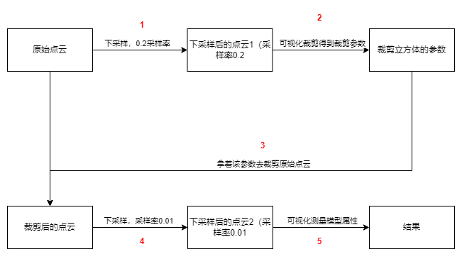
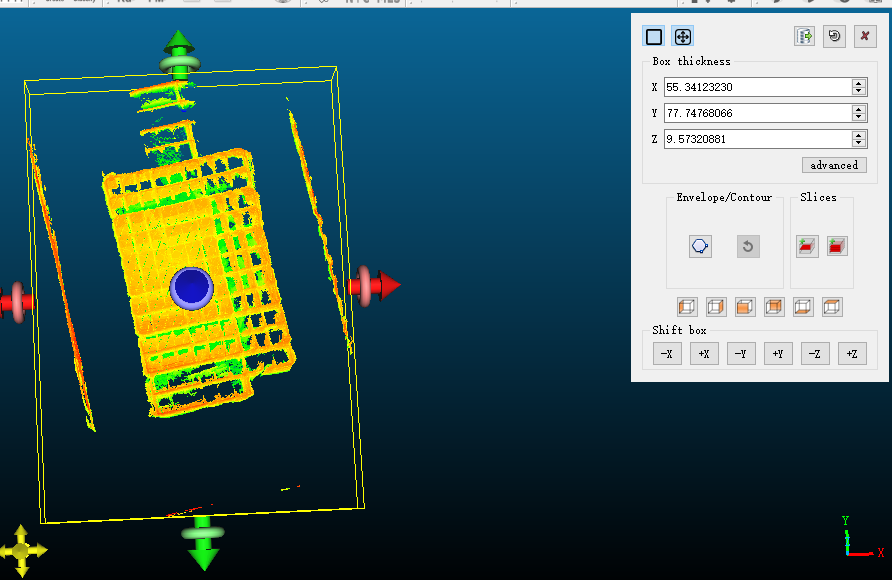
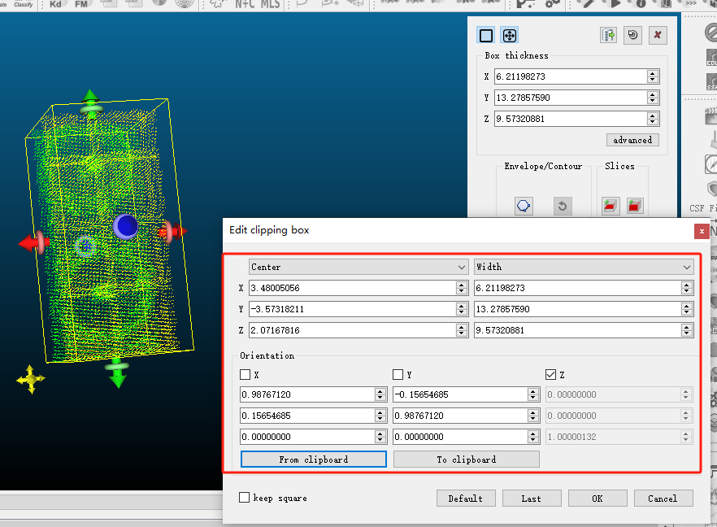

前言
雷达扫描的点云数据量往往很大，而其中存在大量不需要的点。
例如我只需要某个小模型的点云，但雷达将周围的环境也一并扫描进来了，这些环境点云我并不需要。
现在我需要测量这个小模型的某些属性。（比如长宽）
此时如果直接在全部点云数据下进行测量，将这些点云加载出来都是一个很大的问题。在我的机器上，使用Cloud Compare载入1.3亿数量级的点云数据直接卡死。
通常情况下，可以通过体素降采样的方式（例如体素值为2dm）极大缩小点云的数量，但我的需求是希望计算小模型的长宽，其误差不超过5cm。
解决方案
因此我的做法如图所示：

- 首先为了能够将点云展示出来，我要极大的下采样点云，这里我取参数为0.2（2dm），得到下采样后的点云1
- 使用CC加载点云1，并可视化裁剪点云，得到裁剪立方体的参数，包括立方体的中心，长宽高，旋转等
- 使用上一步的得到的参数去裁剪原始点云，极大的减少了点云数量
- 将裁减后的点云下采样，为了保证精度，这次下采样率为0.01（1cm），得到点云2
- 可视化点云2，并进行测量，得到结果。
步骤
1.
编写python脚本并导入到CC，执行该脚本，将点云1加载到CC中
import pycc
import cccorelib
cc = pycc.GetInstance()
import open3d as o3d
import numpy as np
pcd: o3d.geometry.PointCloud = o3d.io.read_point_cloud(r"origin.pcd")
pcd = pcd.voxel_down_sample(0.2)
points = np.asarray(pcd.points)
xs = points[:, 0]
ys = points[:, 1]
zs = points[:, 2]
pc = pycc.ccPointCloud(xs, ys, zs)
cc.addToDB(pc)
|
2.
在CC中对点云进行切片，得到想要的部分点云的裁剪立方体参数。


如图分别是裁剪前后的效果图，裁剪后的红框里是裁剪立方体的参数。复制下来后面要用到。
transformation matrix:
0.987671196461 -0.156546846032 0.000000000000 3.480050563812
0.156546846032 0.987671196461 0.000000000000 -3.573182106018
0.000000000000 0.000000000000 1.000001311302 2.071678161621
0.000000000000 0.000000000000 0.000000000000 1.000000000000
长宽高：
X: 6.21198273
Y: 13.27857590
Z: 9.57320881
|
3.
由上述的参数可以知道该立方体的中心点是(3.480050563812, -3.573182106018, 2.071678161621)，旋转矩阵为
长宽高为(6.21198273, 13.27857590, 9.57320881)
因此可以写代码使用open3d来裁剪原始点云：
pcd: o3d.geometry.PointCloud = o3d.io.read_point_cloud(r"origin.pcd")
obx = o3d.geometry.OrientedBoundingBox(
np.array([3.480050563812, -3.573182106018, 2.071678161621]),
np.array([
[0.987671196461, -0.156546846032, 0.000000000000],
[0.156546846032, 0.987671196461, 0.000000000000],
[0.000000000000, 0.000000000000, 1.000001311302]
]),
np.array([6.21198273, 13.27857590, 9.57320881])
)
pcd_cropped = pcd.crop(obx)
pcd_cropped = pcd_cropped.voxel_down_sample(0.01)
o3d.io.write_point_cloud('cropped.pcd', pcd_cropped)
|
4.
经过这些步骤后，点云数据量从1.3亿降到了840万。将这个cropped.pcd拿到CC中打开，并测量。（图略）
总结
本文方法既解决了大规模点云数据加载卡死、操作困难的问题，又能精确得到计算结果。
不过流程可以再优化，更自动化一些。
Refs
无